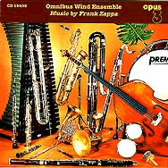
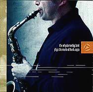
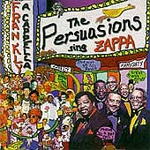

Заппа'zУх!Ой!
русский более или менее регулярный бюллетень для поклонников американского композитора
Frank'а Vincent'а Zappa'ы
Выпуск.27 (21 декабря 2000)
Шестьдесят
Где устраивают юбилейные концерты? Ну, конечно, в Колонном зале Дома Союзов. Развешивают гирлянды шариков, расставляют пластилиновые розы в корзинах и вазонах. Бюст прикрывают простынкой с золотыми цифрами, все, готово. Осталось облачиться в черное, блестящее и можно топать к рампе, объявлять секретное слово вечера. Big Note!
Начнется праздник исключительно торжественно. Двенадцать чуваков из Швеции сыграют на духовых. Прекрасные, истинно нордические аранжировки. Неразрывное единство любви и дисциплины. Гвоздь выступления - премьера композиции с правильным, достойным великих собратьев юбиляра названием, опус No. 7.
Аплодисменты. Встречайте...
Omnibus Wind Ensemble: Music By Frank Zappa, 1995
|
 |
Во втором отделении меняем банкирский смокинг на питерского кроя пиджачок. Пижонский аршин в плечах, искра стиляжная по всей поверхности сукна. Мы будем слушать джазик! Музыку толстых с легким вкраплениями музыки датых. Я имею ввиду рок-гитарку Mike'а Keneally. Он процитирует для благородной публики пару, тройку незабываемых соло маэстро. Смертельный номер продолжительностью от пяти до пятнадцати тактов. Секретное слово этой части концерта - We Sort Of Dance To It!
Ed Big Palermo Band: Plays The Music Of Frank, 1997
|
 |
|
Третье отделение, оно же, audience participation time. Друзья, споем! Be-Bop Karaoke of Doo-Wop Church не предполагает минусовки. Чистый, неразведенный первач а капеллы. Ну, разве вездесущий Кинели, разок, другой, по струнам брякнет, да Bruce Fowler подудит в трубу. "Ой, мороз, мороз..." Форма одежды - кирзачи и зуб золотой. Секретной слово - Mammy Nun!
Плесни, родимый! Поехали, товарищ дорогой!
Persuasions: Frankly A Cappella, 2000
|
 |
Вот и все. Блеск в глазах. Червонец гардеробщику. Программка на память. Прекрасный вечер.
С днем рождения, Заппа Фрэнк!
Искренне Ваш, Владимир Советов
http://www.arf.ru/
| Домой | Заппа'zУх!Ой! | Поиск | Хозяин |